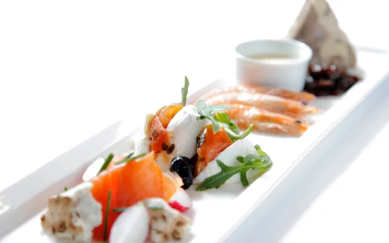

Frokost · 11.00–15.00
Fra quiche til stjerneskud
Frokosten er hverdagsagtig og hurtig nok til en pause midt på dagen, men det er stadig køkkenets egne retter: suppe, carpaccio, moules og stjerneskud. Brunchanretningen med seks små retter kan bestilles hele frokosten igennem.
Se frokostkortet Frokostsiden på belli.dk